来源：https://qnfoes1o78.feishu.cn/docx/JWdfdSjZmoVNT9xpu0Cc70N2nic
作为一个资深信息检索爱好者，这个话题可谓是命中爱好了，
先问大家一个问题：全球网站流量排行最高的网站，都有哪些？
这是比较好玩的事情，通过这个问题能摸索出全球的流量分布情况。
口令：https://www.google.com/#newwindow=1&q=abcde&safe=off
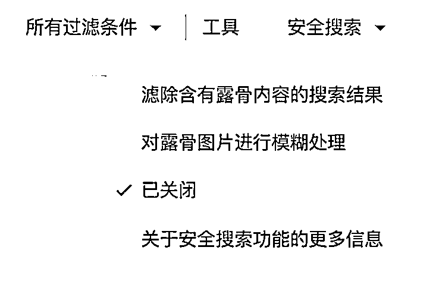
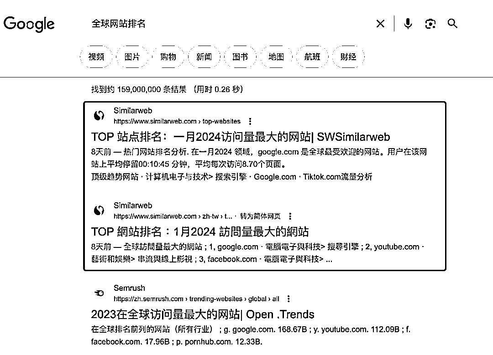
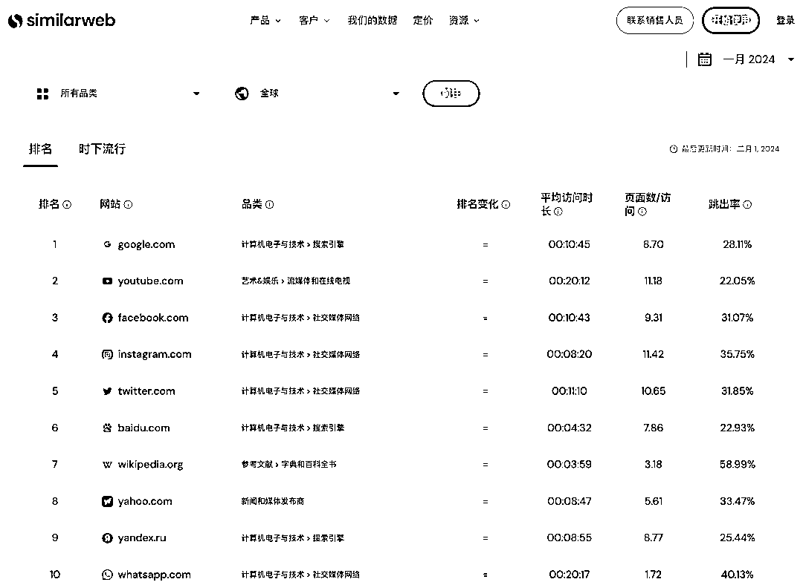
基本都是大家耳熟能详使用过的网站，
百度排行第六，还是挺厉害的。
第11-20的网站呢，
会发现里面混进来几个成人类目，P站、X站都有。
网飞、chatgpt也在其中。
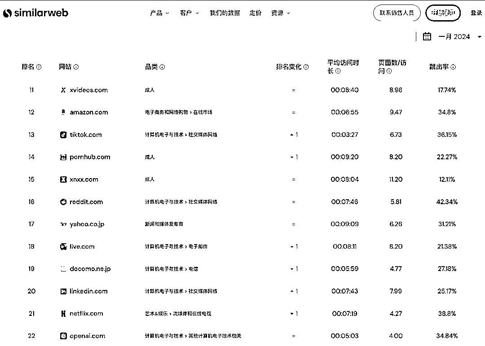
一直往下拉，是可以TOP50的信息
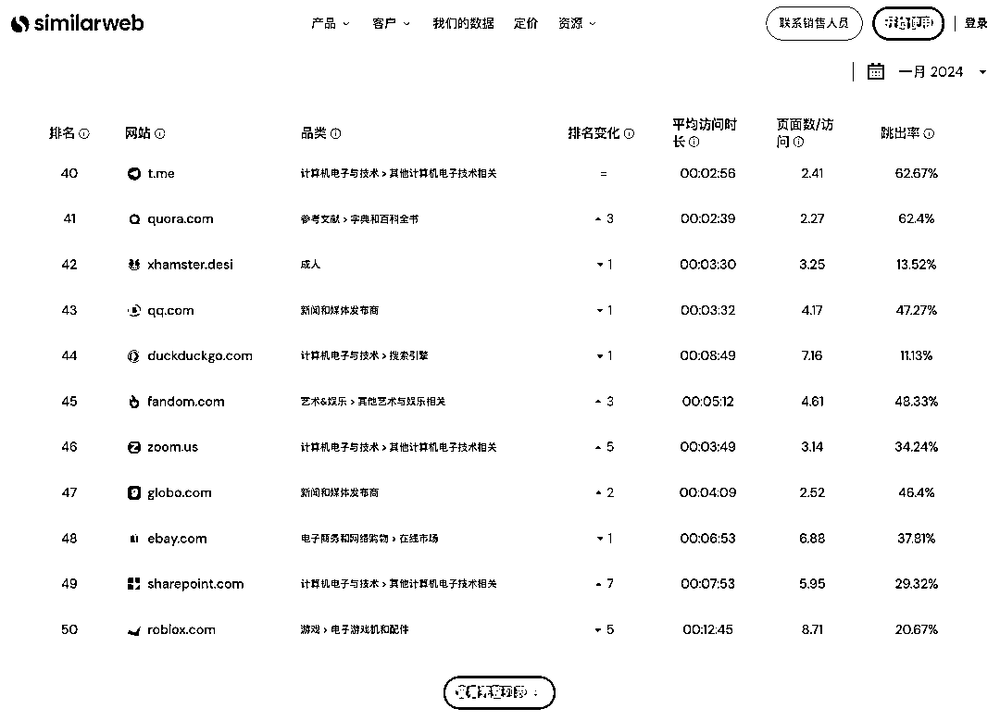
完整列表是需要充值会员才能看了。
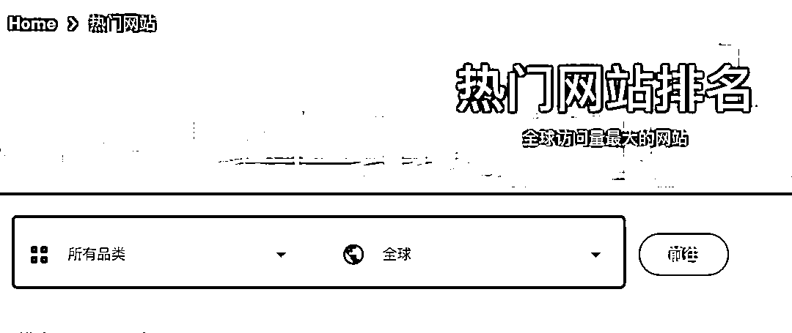
固定品类、固定国家地区，
通俗点说，可以利用它，查询出某个国家的某个行业，当地哪个机构是地头蛇，
对于快速渗透当地某行业，是一个非常好的风向标参考办法。
种类非常多，截图给大家看下部分的品类。
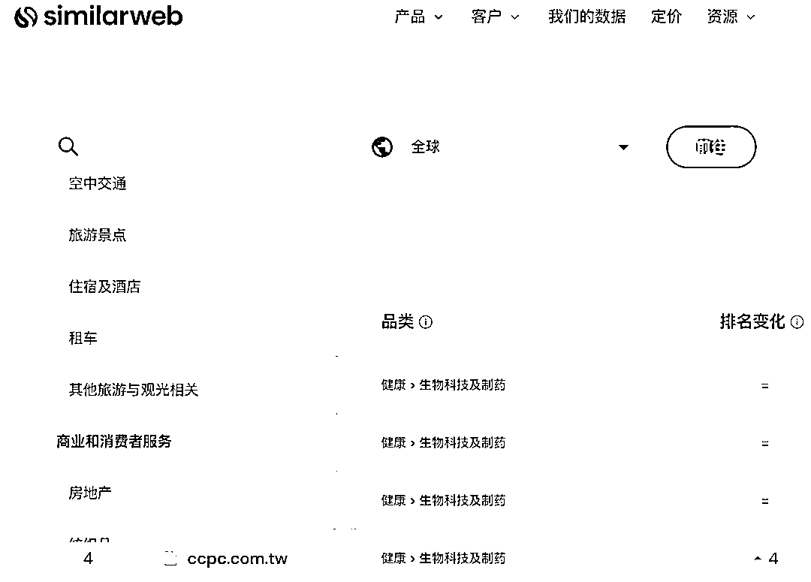
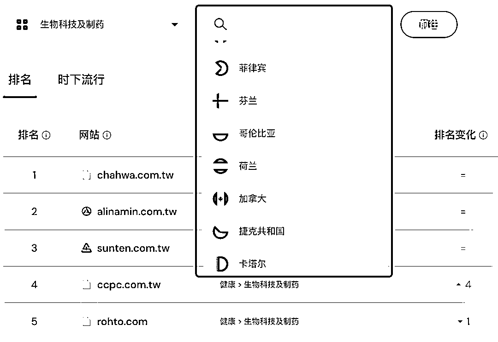
举个例子，看一看
查询美国成人网站↓
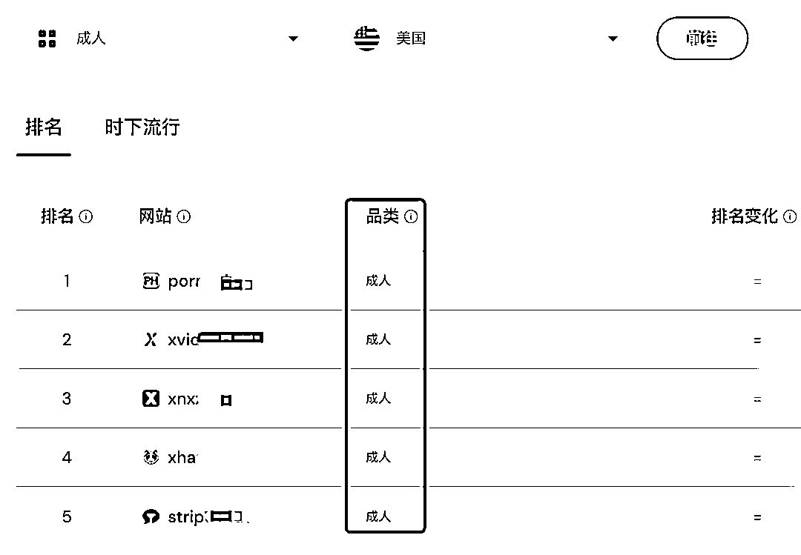
俄罗斯电商市场↓
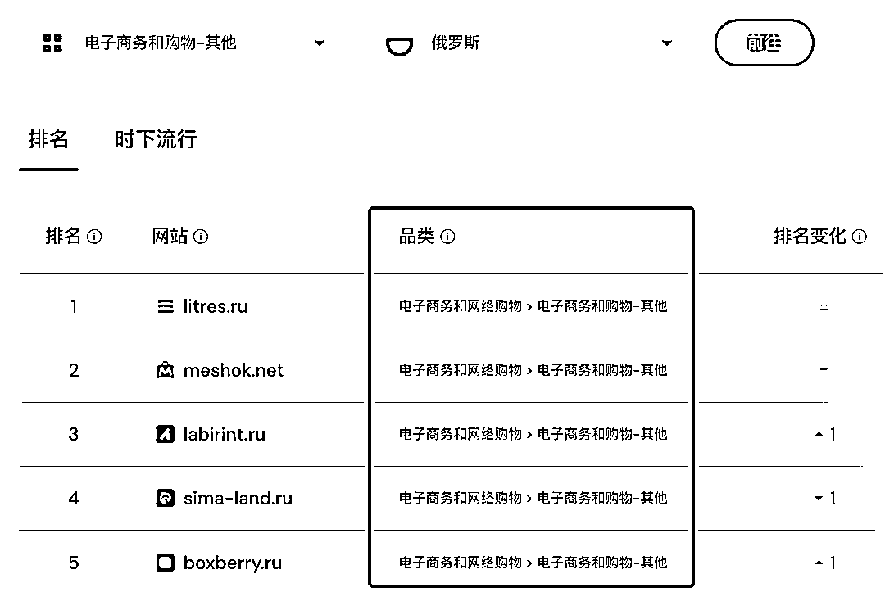
台湾的生物科技↓
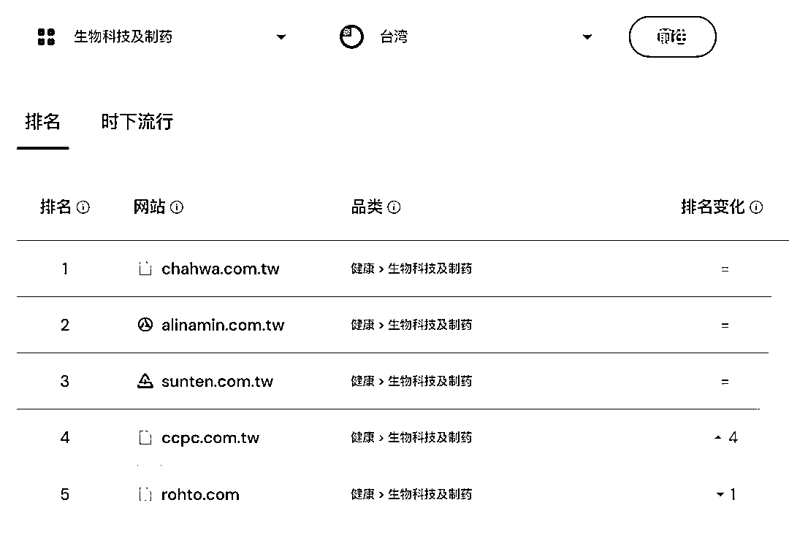
每一种排列组合都能挖掘出，之前不曾接触到的网站，
非常好玩，有一种探险寻宝的新奇感。
闲暇无事，从这里找寻一些新鲜感，放松一下大脑。
1、在搜索关键词后空格加上 “lang:zh” 可以只显示中文推文内容。
2、在关键字表达式后面加上 filter:links 就只返回带链接的推，这在搜资源的时候极为有用。
3、当一个词成为敏感词，在搜索引擎里被完全屏蔽时，可以给关键词加上双引号或者空一格加减号后面跟一堆乱码。比如搜索：["马斯克"] 或者 [马斯克 -jsdkskf]
YouTube 搜索技巧：
特定频道，关键字：royal wedding, channel；
搜索最新，关健字：oprah winfrey, this week；
原创视频，关键字：never say never, partner
时长电影，关键字：jackie chan, movie
精准匹配，关键字：allintitle:”google goes gaga”
混合匹配，关键字：ted talks, hd, this month
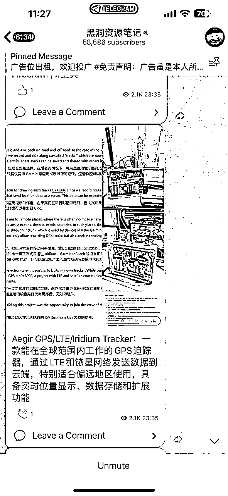
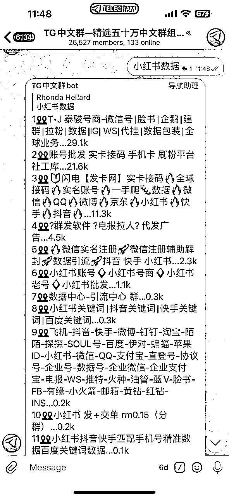
时间原因，写的比较仓促，就先分享到这里（先完成再完美）
如果大家对信息检索比较感兴趣，我后面再来分享一些其他搜索技巧，
不同平台+不同搜索技巧，可以解决不同的问题，或者说寻找到不同的资料。
是一门软技能！
虽不像硬技能那般受关注，但需要的时候，会极大提高办事效率。
虫部落；
超级搜索；
信息源：
1、x，找这些技术专家
2、纸飞机，找到各种资源群
3、quora，他们在用什么
4、